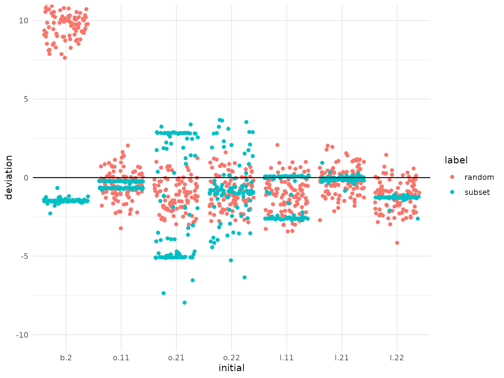

The probit model is a widely employed statistical tool for analyzing discrete choice behavior in various fields, including transportation (Bolduc 1999; Shin et al. 2015) and marketing (Allenby and Rossi 1998; Haaijer et al. 1998; Paap and Franses 2000). The estimation of probit model parameters typically involves the numerical maximization of the likelihood function. However, this approach can be computationally expensive and may encounter problems in reaching the global optimum, especially when dealing with complex models. In this vignette, we utilize the ino package to investigate the influence of initialization on the numerical maximization of the probit likelihood function.
Model formulation
In our model formulation, we consider a scenario where a total of \(N\) deciders are faced with choosing among \(J \geq 2\) alternatives at each of the \(T\) choice occasions. The choice made by decider \(n\) at occasion \(t\) is denoted as \(y_{nt}\) and can take values in the set \(\{1, \dots, J\}\). For more comprehensive details on the probit model and its estimation, please refer to the works by Train (2009) and Bhat (2011).
We assume that the choices are rational, meaning that the selected alternative \(y_{nt}\) corresponds to the alternative with the highest utility among the available options. The utility for decider \(n\) at occasion \(t\) is represented by a vector \(U_{nt} \in \mathbb{R}^J\), where each entry of the vector corresponds to the utility associated with a specific alternative. The probit model explains the utility vector as \[U_{nt} = X_{nt} b + \epsilon_{nt},\] where \(X_{nt}\) is a \(J\times P\) matrix containing \(P\) characteristics for each alternative, \(b\) is a coefficient vector of length \(P\), and \(\epsilon_{nt} \sim N(0,\Sigma)\) denotes the vector of jointly normally distributed errors, which capture unobserved influences on the utility.
The probit model (like any utility model) is invariant to the level and scale of the utilities \(U_{nt}\). We ensure identifiability by considering utility differences, which reduces \(\Sigma\) from \(J\) to \(J-1\) dimensions, and fixing the first entry of \(b\) to \(1\).
To account for preference heterogeneity across decision-makers, the mixed probit model incorporates decider-specific coefficient vectors as \(\beta_n \sim N(b, \Omega)\). In the degenerate case where \(\Omega = 0\), all decision-makers share the same preferences, and \(\beta_n \equiv b\).
The goal of the researcher is to estimate the values for \(b\), \(\Omega\), and \(\Sigma\) based on a set of observed choice data. The most common approach for estimation is the maximum likelihood method. Let \(\theta\) represent the vector of identified parameters, which includes \(P-1\) coefficients of \(b\), \(P(P+1)/2\) coefficients of \(\Omega\), and \(J(J-1)/2\) coefficients of the differenced matrix \(\Sigma\). To ensure that the estimates result in proper covariance matrices, the optimization is performed over the Cholesky factors. It is important to note that the length of the parameter vector \(\theta\) increases quadratically with both the number of alternatives \(J\) and the number of choice characteristics \(P\), indicating that numerical optimization becomes computationally demanding for complex models with a high number of alternatives or choice covariates.
The maximum likelihood estimate \(\hat{\theta}\) is obtained by solving \[\hat{\theta} = \arg \max_\theta \log \sum_{n,t,j}
1(y_{nt} = j) \int 1(j = \arg \max U_{nt}) \phi(\epsilon_{nt}) d
\epsilon_{nt},\] where \(1(\cdot)\) denotes the indicator function
and \(\phi(\cdot)\) represents the
Gaussian density. The integral part of the equation does not have a
closed-form expression, thus requiring numerical approximation. Here, we
utilize the mvtnorm::GenzBretz() algorithm by Genz and Bretz (2009) for this purpose.
Data simulation and likelihood computation
The ino package provides the sim_mnp()
function, which enables simulation of choice data from a probit model.
Prior to utilizing this function, it is necessary to define the function
X(n, t), which generates a matrix representing the choice
characteristics for decision maker \(n\) at choice occasion \(t\). The matrix should have dimensions of
\(J \times P\), where \(J\) corresponds to the number of available
alternatives, and \(P\) indicates the
number of characteristics describing each alternative.
For our simulation, we have a choice setting with \(J = 3\) alternatives, characterized by \(P = 2\) attributes. The values in the first column of \(X_{nt}\) are drawn from a normal distribution \(\mathcal{N}(\mu = 10, \sigma = 3)\), while the values in the second column are drawn from \(\mathcal{N}(\mu = 0, \sigma = 0.3)\). This design reflects the common situation of observing choice covariates on different scales.
X <- function(n, t) {
J <- 3
cbind(stats::rnorm(J, mean = 10, sd = 3), stats::rnorm(J, mean = 0, sd = 0.3))
}
X(n = 1, t = 1)
#> [,1] [,2]
#> [1,] 8.120639 0.47858424
#> [2,] 10.550930 0.09885233
#> [3,] 7.493114 -0.24614052We simulate choice data for \(N = 200\) deciders at \(T = 30\) choice occasions from the probit model defined by the parameter values \(b = \begin{pmatrix} 1 & -10 \end{pmatrix}^\top\), \(\Omega = \begin{pmatrix} 0.2 & 0.5 \\ 0.5 & 2 \end{pmatrix}\), and \(\Sigma = \begin{pmatrix} 1 & -0.5 & 0.2 \\ -0.5 & 1 & 0.2 \\ 0.2 & 0.2 & 1 \end{pmatrix}\):
N <- 200
T <- 30
b <- c(1, -10)
Omega <- matrix(c(0.2, 0.5, 0.5, 2), 2, 2)
Sigma <- matrix(c(1, -0.5, 0.2, -0.5, 1, 0.2, 0.2, 0.2, 1), 3, 3)
probit_data <- sim_mnp(N, T, J = 3, P = 2, b, Omega, Sigma, X, seed = 1)The probit_data object is a data.frame with
the decider index n, the choice occasion index
t, the choice y, and the choice
characteristics X:
head(probit_data)
#> n t y X.11 X.21 X.31 X.12 X.22 X.32
#> 1 1 1 2 13.2233229 15.686964 8.191008 -0.1172603 -0.12486661 -0.1126972
#> 2 1 2 3 7.9073851 8.835497 11.957609 0.3374317 -0.23163324 -0.1524259
#> 3 1 3 3 5.7100197 15.127363 14.305209 -0.2131113 -0.01952027 -0.5278406
#> 4 1 4 1 7.6612945 8.076469 7.956606 -0.6099857 0.15028907 -0.4595394
#> 5 1 5 2 12.6760252 9.922855 8.057019 0.1939078 -0.13014982 0.5317834
#> 6 1 6 2 0.9758542 5.901664 8.727693 0.0710411 -0.70281694 0.2885090The probit_data object includes the attribute
true, which contains the true and identified
parameter values. These values consist of the mean effects \(b\), excluding the first element, the
elements \(o\) of the lower-triangular
Cholesky root of \(\Omega\), and the
elements \(l\) of the lower-triangular
Cholesky root of the differenced covariance matrix \(\Sigma\) (with respect to alternative \(J\)):
round(theta <- attr(probit_data, "true"), 2)
#> b.2 o.11 o.21 o.22 l.11 l.21 l.22
#> -10.00 0.45 1.12 0.87 1.26 0.08 1.26The probit likelihood function is implemented as
f_ll_mnp() and can be evaluated by providing a parameter
vector theta and a data set probit_data:
f_ll_mnp(theta = theta, data = probit_data)
#> [1] -2153.488Setup
To analyze the outcome of the numerical likelihood optimization for the multinomial mixed probit model, we apply the ino package:
- We first define a
Nopobject by setting the target functionf = f_ll_mnp, the number of parameters tonpar = 7, anddata = probit_data. - Then, we apply the
stats::nlmoptimizer with a limit of 1000 iterations. Since this optimizer minimizes the objective function instead of maximizing it, we setneg = TRUEto compute the negative log-likelihood value.
probit_ino <- Nop$new(f = f_ll_mnp, npar = 7, data = probit_data, neg = TRUE)$
set_optimizer(optimizer_nlm(iterlim = 1000))The true parameter vector theta is saved to assess the
convergence of the optimization runs to the global optimum:
probit_ino$true_parameter <- thetaThe initial Nop object looks as follows:
print(probit_ino)
#> Optimization problem:
#> - Function: f_ll_mnp
#> - Optimize over: theta (length 7)
#> - Additional arguments: data, neg
#> - True optimum at: -10 0.45 1.12 0.87 1.26 0.08 1.26
#> - True optimum value: 696.44
#> Numerical optimizer:
#> - 1: stats::nlm
#> Optimization results:
#> - Total runs (comparable): 400 (200)
#> - Best parameter: -10.49 -0.28 -2.81 0 1.37 0.04 -1.12
#> - Best value: 687.71Random initialization
As a benchmark, we optimize runs = 100 times using
random initial values drawn from a standard normal distribution:
probit_ino$optimize(initial = "random", runs = 100, label = "random")Initializing using estimates from a data subsample
Next, we obtain starting values by estimating a probit model on a subset of the data. In this example, we randomly select 20% of the data points for the subset. Our aim is to initialize the full model close to its global optimum by investing a small computational effort in estimating the reduced model:
probit_ino$
reduce("data", how = "random", proportion = 0.2)$
optimize(initial = "random", runs = 100, label = "subset")$
reset_argument("data")$
continue()The $reduce() method offers additional options for
selecting the composition of the subset, which can further enhance the
initialization process:
how = "first"andhow = "last": These options allow to select the subset from the beginning or the end of the data, respectively, focusing on specific segments of the data set.how = "similar"andhow = "dissimilar": These options utilize k-means clustering to identify subsets of similar or dissimilar data points. By clustering the data based on similarity, a subset that represents a distinct group within the data set can be selected. This approach can be particularly useful when there are distinct patterns or characteristics within the data.
probit_ino$deviation(
reference = probit_ino$true_parameter, which_run = c("random", "subset"),
parameter_labels = c("b.2", "o.11", "o.21", "o.22", "l.11", "l.21", "l.22")
)
#> Warning: Removed 14 rows containing missing values (`geom_point()`).
Estimation with standardized covariates
In choice settings, covariates can have varying scales, which can
result in differences in the magnitudes of model parameters. To enhance
numerical stability during estimation, a common strategy is to
standardize the covariates prior to the estimation. Here, we evaluate
the effectiveness of standardizing covariates using the
$standardize() method. By setting
ignore = 1:3, we exclude the first columns containing
indices from the standardization.
probit_ino$
standardize("data", by_column = TRUE, ignore = 1:3)$
optimize(initial = "random", runs = 100, label = "standardized")$
reset_argument("data")Results
probit_ino$optima(digits = 0, which_run = "random")
#> value frequency
#> 1 688 81
#> 2 <NA> 9
#> 3 689 5
#> 4 690 2
#> 5 814 1
#> 6 1234 1
#> 7 1886 1
probit_ino$optima(digits = 0, which_run = "subset")
#> value frequency
#> 1 688 64
#> 2 715 4
#> 3 713 3
#> 4 718 3
#> 5 689 2
#> 6 690 2
#> 7 692 2
#> 8 717 2
#> 9 759 2
#> 10 <NA> 2
#> 11 700 1
#> 12 721 1
#> 13 739 1
#> 14 740 1
#> 15 745 1
#> 16 747 1
#> 17 748 1
#> 18 750 1
#> 19 752 1
#> 20 753 1
#> 21 756 1
#> 22 757 1
#> 23 758 1
#> 24 760 1
plot(probit_ino, by = "label", relative = TRUE)
library("dplyr")
#>
#> Attaching package: 'dplyr'
#> The following objects are masked from 'package:stats':
#>
#> filter, lag
#> The following objects are masked from 'package:base':
#>
#> intersect, setdiff, setequal, union
summary(probit_ino, which_element = c("seconds", "label")) %>%
group_by(label) %>%
summarize(
mean_seconds = mean(seconds, na.rm = TRUE),
sd_seconds = sd(seconds, na.rm = TRUE)
)
#> # A tibble: 4 × 3
#> label mean_seconds sd_seconds
#> <chr> <dbl> <dbl>
#> 1 random 2177. 1589.
#> 2 standardized 1442. 995.
#> 3 standardized_subset 1038. 548.
#> 4 subset 1747. 1024.